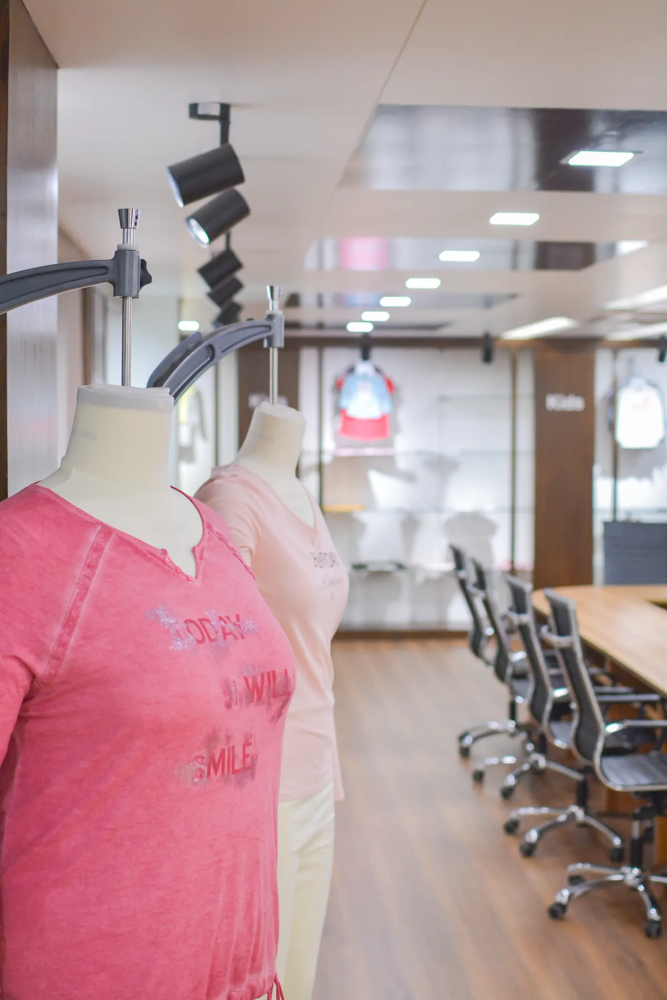
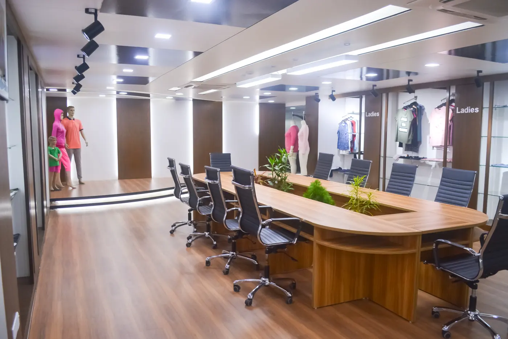
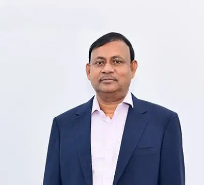

About M.M. Group
A quarter century of knitwear mastery and continuous growth.

From One Factory to a National Leader
M.M. Group started its journey on 1st September 2001 as a knitwear manufacturer. Over the past 25+ years, we have grown into one of Bangladesh’s most respected vertically integrated knit composite operations.
Our founder’s vision was to create a one-stop garment manufacturing solution — from yarn to finished garment — all under one roof. Today, that vision is a reality with 15,23,000 sqft of manufacturing space, 10,982 employees, and state-of-the-art machinery.
We are 100% export-oriented, serving global fashion brands across 15+ countries with an annual turnover exceeding $120 million.
Partner with UsGrowth & Milestones
M.M. Knitwear Ltd. Founded
Started operations on 1st September as a knitwear manufacturing company in Gazipur, Bangladesh.
Mamun Knitwear Ltd. Established
Sister concern launched specializing in knitting, cutting, and garment manufacturing.
Dyeing Extension (Unit 2)
Expanded dyeing capacity with a second unit to meet growing demand for in-house dyeing.
All Over Print & Label Expansion
M.M. Label & Accessories Ltd. established. New all-over print facility commissioned.
Continued Growth
$120M+ annual turnover, 10,982 employees, serving 15+ countries with 200,000 pcs/day capacity.

Driven by Purpose
Vision: To be a global industry benchmark for quality products and services, alongside being a role model for sustainable behavior towards the environment and community.
Mission: We seek to empower individuals through high-quality, sustainable fashion that respects our planet. Customer satisfaction is our main goal.
Our Values
- Quality excellence in every process
- Environmental sustainability & responsibility
- Employee welfare & community development
- Innovation & continuous improvement
- Integrity & ethical business practices
Meet Our Team
The people who lead M.M. Group and its family of companies.
Mamunur Rashid
Managing DirectorWith more than 20 years of experience in Bangladesh’s textile and garment manufacturing industry, he continues to raise quality and production capacity as the sector becomes increasingly competitive. As a solutions provider for a diverse client portfolio, he has expanded production into fabrics with unique and specific functionalities, constantly upgrading technology and machinery to explore new and innovative yarns and fibers.

Mofizul Islam
Chairman & FounderAs one of the leading exporters of garments, he is driving expansion into CIS countries, Japan and other new markets to increase export volume, create more jobs through modern compliance factories, and add value through backward linkage industries and automatic Jacquard machines — all while keeping environmental and labor practice standards at the heart of responsible manufacturing.